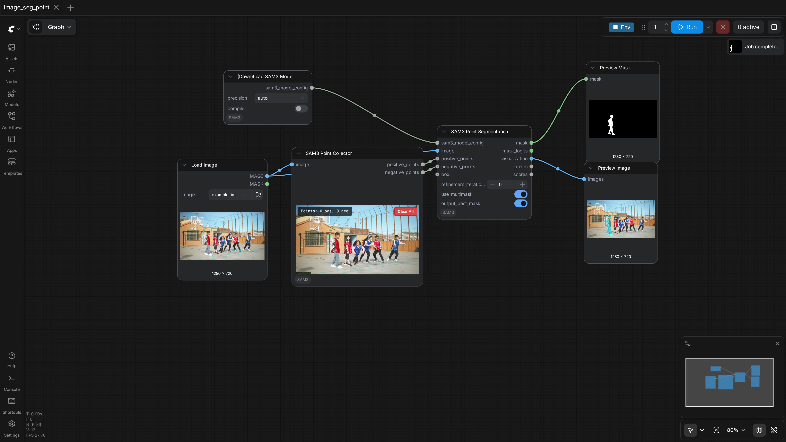
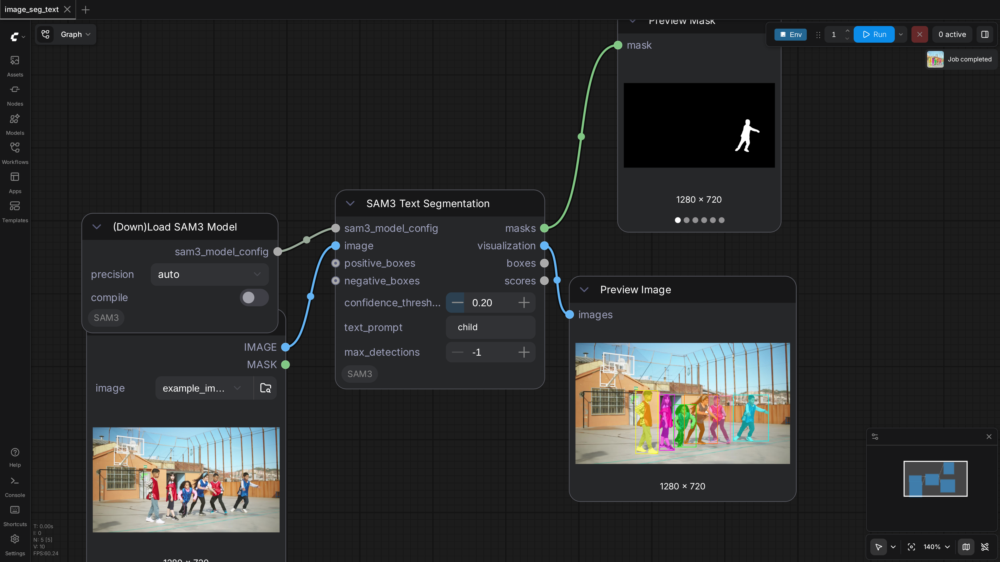
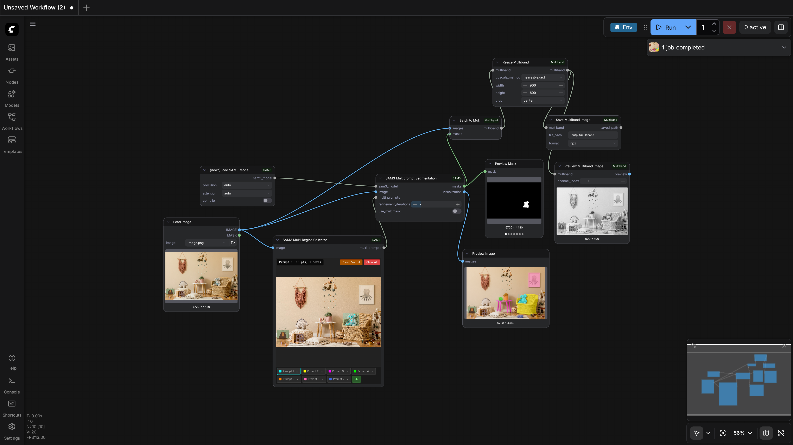
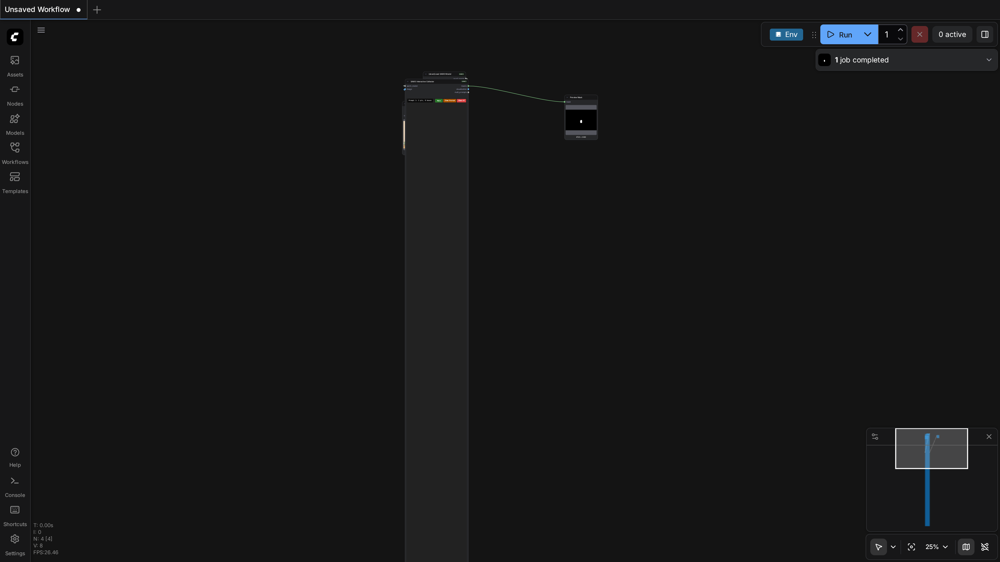
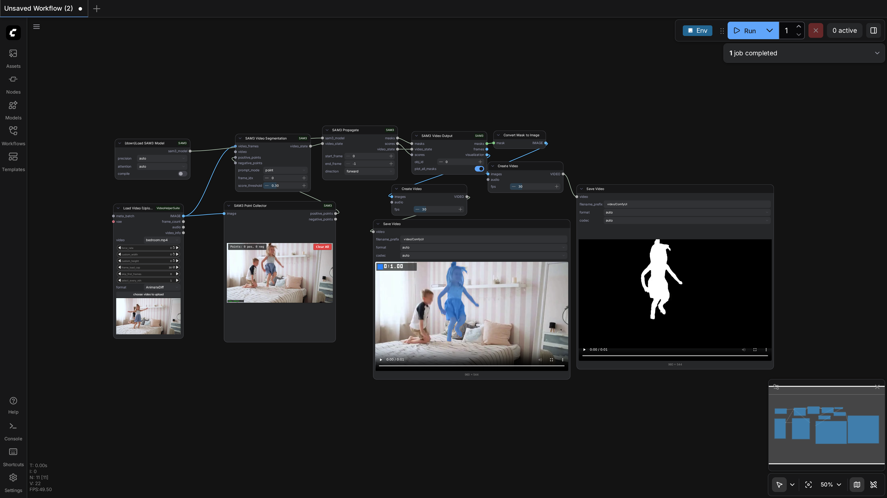

ComfyUI-SAM3
Test Results
2026-02-26 01:02 UTC
Linux-6.8.0-90-generic-x86_64-with-glibc2.35
Intel(R) Xeon(R) CPU E5-2683 v4 @ 2.10GHz
NVIDIA RTX A6000
100.0%
5 passed
5/5 tests
Workflows
Grid
List

image_seg_point
pass
53.22s

image_seg_text
pass
19.80s

scene_seg
pass
64.99s

scene_seg_interactive
pass
28.37s

video_point_prompt
pass
53.37s
Downloaded Models
3 files · 3.2 GB
models/sam3/
3.2 GB
sam3.safetensors
3.2 GB
.cache/huggingface/download/sam3.safetensors.metadata
125.0 B
.cache/huggingface/.gitignore
1.0 B
×
0.0s / 0.0s
Resource Usage
RAM (GB)
VRAM (GB)